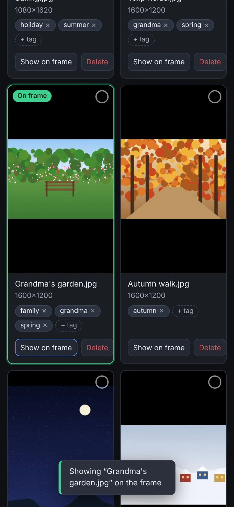
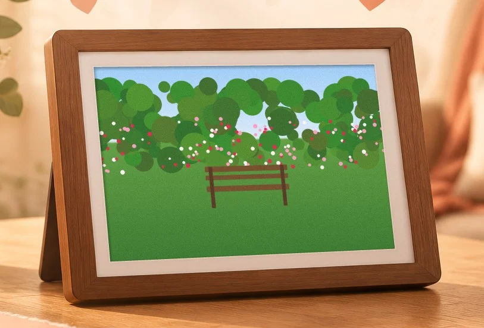
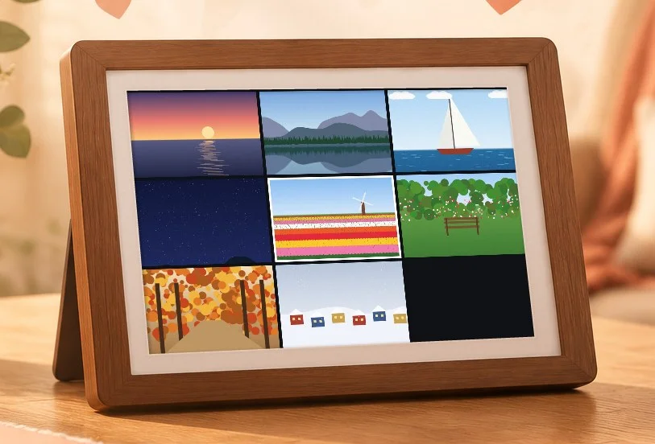
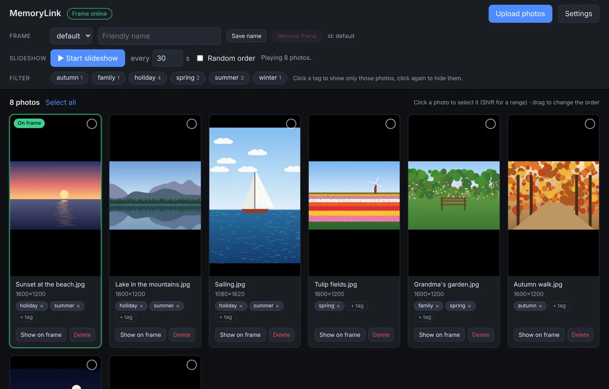
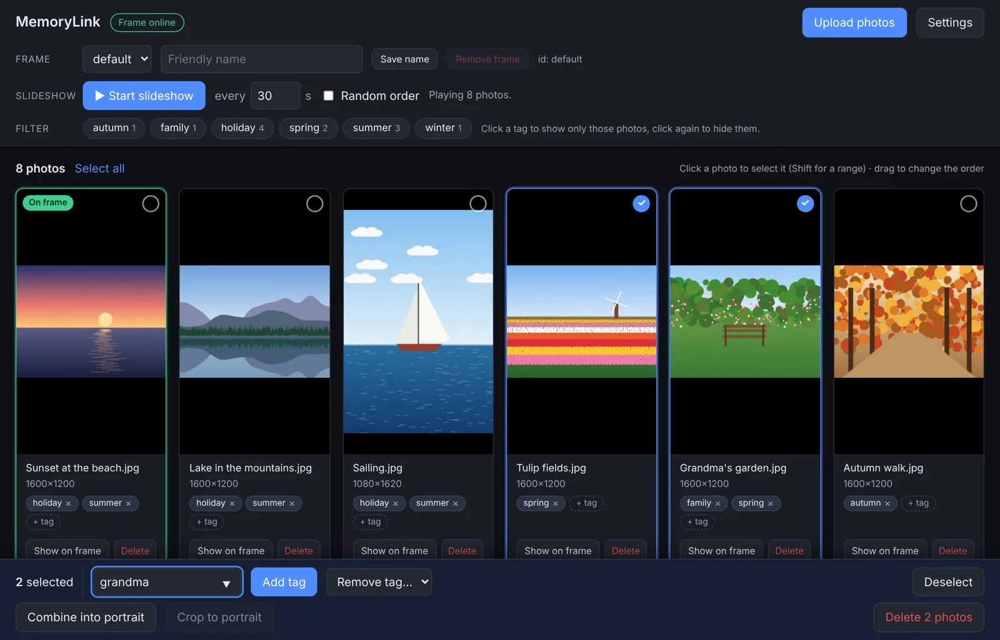
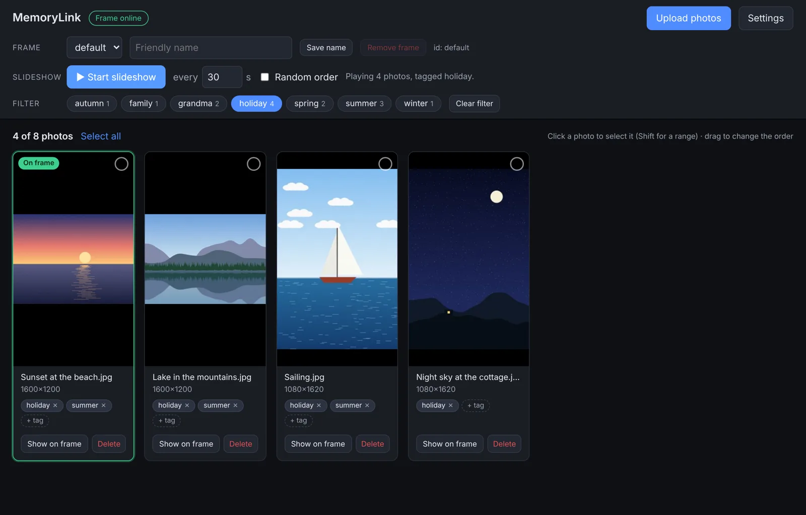
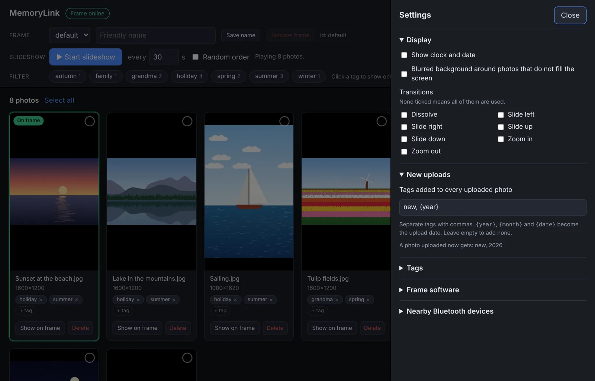
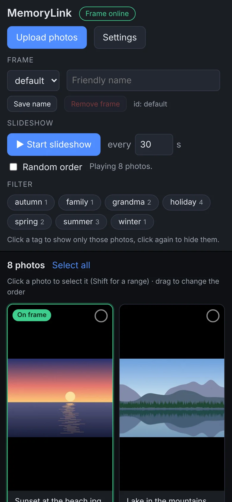
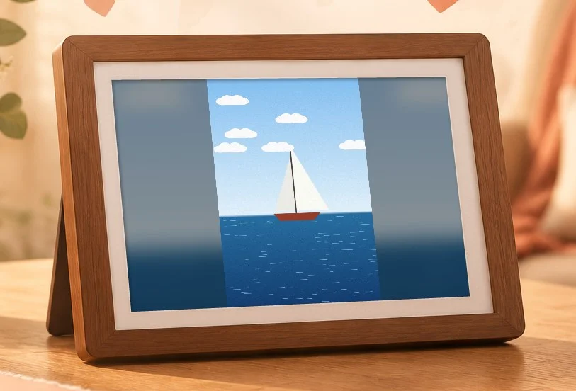

Share your photos with someone who never touches a computer.
MemoryLink turns an Android tablet into a photo frame that you fill from
your own phone or computer, wherever you are. The person who has it on
their dresser doesn't need to do anything. They just look.
Made for the people we love who are not good with computers
Grandparents, an aunt in a care home, a friend who never got used to a
smartphone: they miss out on the photos everyone else shares in group
chats and on social media. MemoryLink brings those photos to them without
asking them to learn anything.
🖼️
Nothing to learn
There are no menus, no accounts and no buttons to find. The frame starts
by itself when it is switched on and simply shows photos, all day long.
📲
You do the work, from anywhere
Upload, sort and choose photos from a web page on your own phone or
computer. The frame picks up the change within moments, wherever it is.
🔒
Your photos stay yours
The photos live on your own small server, not on a company's cloud.
No subscription, no ads, and the code is open source.
The part everyone loves
“Look at the frame, Mum — that's the garden now.”
You are on the phone with your mother and want to show her something. With
a smartphone that would mean explaining how to open a message, find the
photo, make it bigger…
With MemoryLink you open the web page on your own phone, tap Show on
frame under a photo, and a moment later it is on the frame next to her
chair. You talk about it together, and when you are done, start the
slideshow again.
Open the MemoryLink page on your phone while you talk.
Tap Show on frame under the photo you want to show.
The frame switches to that photo right away and stays on it.
Tap Start slideshow afterwards, and the frame carries on as before.
The page tells you that the frame is online and marks the photo
that is on it at that moment, so you know she is looking at the same picture.

a moment later →


Take it along
Bring the frame to a friend and show your photos
The frame isn't stuck on the dresser. Take it to a friend's house or a family
party and go through the photos together, with no phone or laptop needed.
It works without internet too, because the frame keeps a copy of every
photo on the tablet.
⇆
Swipe left or right
Next or previous photo: first the ones the slideshow is showing, then all
the other photos in the usual order.
⤡
Pinch
See many photos at once, from 2×2 up to 8×8. Pinch further for more,
the other way for fewer.
☝︎
Tap a photo
Shows it full size. Press back, or pinch again, to return to the overview.
Back home, the frame returns to its slideshow by itself after three minutes
without a touch. Away from home it waits until you are done.
How it works
MemoryLink has two parts: a small server with a web page where you manage the
photos, and an app that turns an Android tablet into the frame. The frame
keeps a connection open to the server, so it hears about every change
straight away. It also keeps a copy of every photo on the tablet, so photos
appear without waiting and can be shown without internet.
💻📱
You
Upload, tag and choose photos in the web page, on any computer or phone.
→
🗄️
Your server
memorylink-server: stores the photos and tells the frame what to show.
Everything is done from one page in the browser. It works on a big
screen as well as on a phone.

All photos at a glance. The green badge shows the one that is on the frame right now.
Tag a whole group at once
Click photos to select them, type a tag and press Add tag.
Newly uploaded photos are selected straight away, so a new batch is tagged
in one go. You can also give every upload a tag automatically, such as
new or the year.


Choose what the frame plays
Click a tag to play only those photos, for example the
holiday or only the grandchildren, or click it twice to leave them out.
Set how long each photo stays up and whether the order is random.
Settings, out of the way
A clock on the frame, a soft blurred background behind
photos that don't fill the screen, the transitions between photos, and
updates of the frame app, all tucked away in one panel.


Just as handy on your phone
Upload photos straight from your phone's camera roll, or
put one on the frame while you are on the phone together.
The frame looks after itself
Once it is set up, nobody needs to touch the tablet again.

Starts on its own
MemoryLink becomes the tablet's home screen, so after a power cut it
comes straight back to the photos.
Copes with a bad connection
Every photo is also stored on the tablet. If the connection drops, the
frame keeps the current photo up, you can still swipe through all photos,
and it picks up again by itself when the connection is back.
Portrait photos look good too
A photo that doesn't fill the screen gets a soft, blurred copy of itself
behind it instead of black bars.
Updates from a distance
A new version of the app can be sent to the frame from the web page, so
you never need to visit just to update it.
Gentle transitions and a clock
Dissolves, slides and zooms between photos, and an optional clock and
date in the bottom corner.
Any old tablet will do
It runs on Android 7.0 and newer, so that tablet in a drawer can get a
second life.
Setting it up
You need a computer that is always on (a small Linux server or a
Raspberry Pi is plenty) and an Android tablet. Setting up takes a bit of
technical know-how, but only once, and only for you.
STEP 1
Run the server
Install memorylink-server
following its deployment guide.
It is a small Python program; the guide also shows how to put it behind HTTPS
with a password.